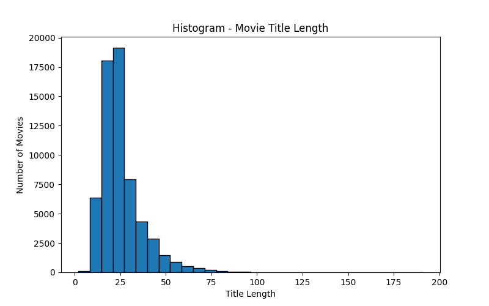
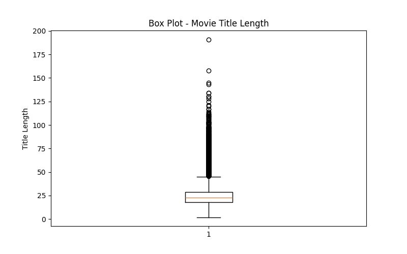
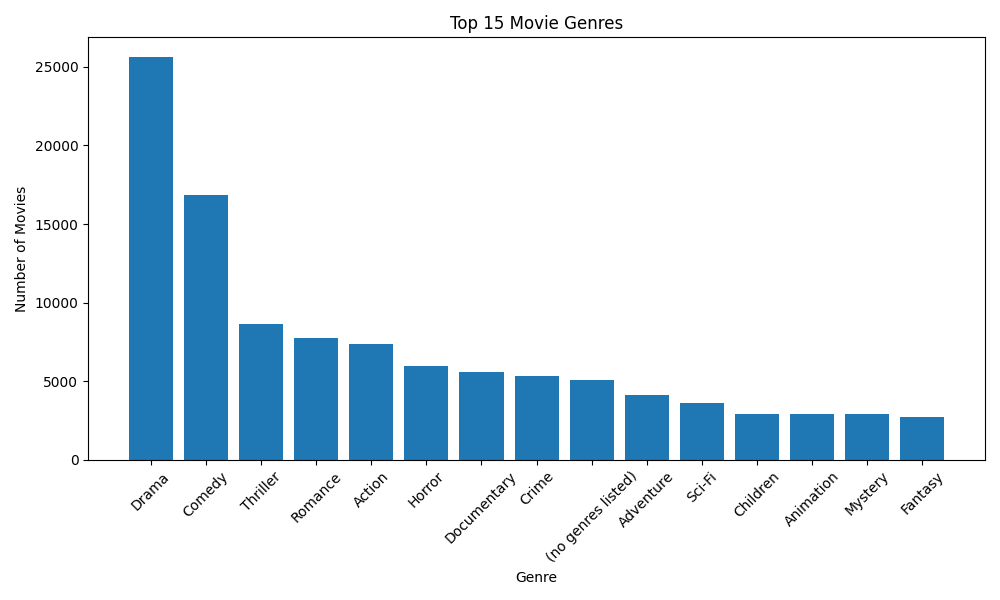
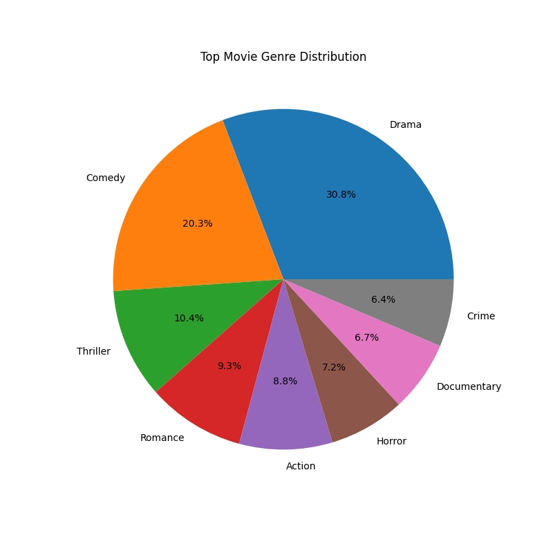
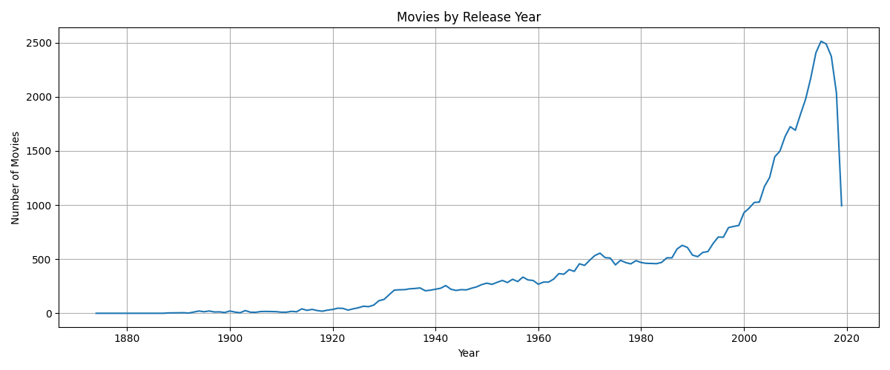
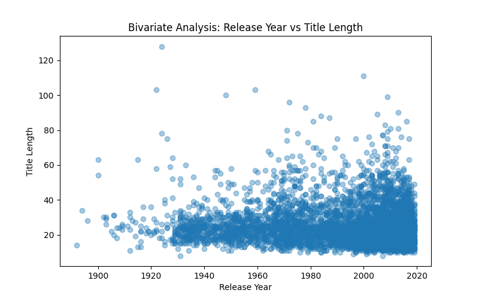
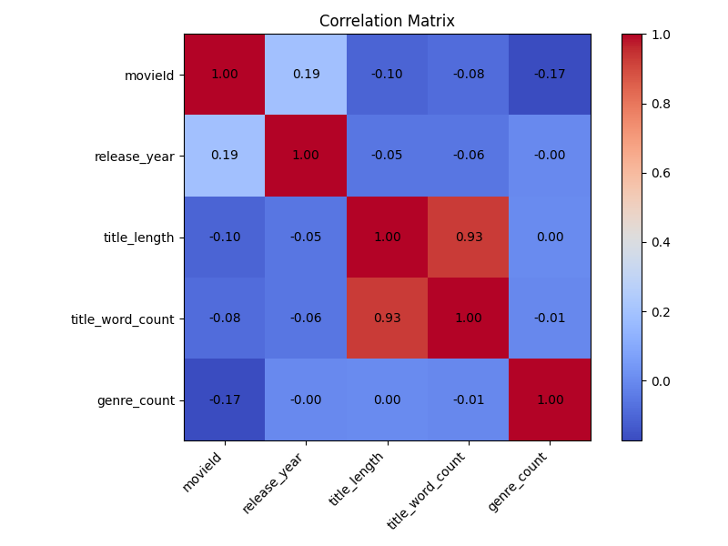

The dataset contains movie information with movie ID, movie title and movie genres.
Numerical variables used for EDA include movieId, release_year, title_length, title_word_count and genre_count.
Title and genres are text/categorical information. Genres can contain multiple categories for one movie.
At this Unit 1 and Unit 2 EDA stage, there is no machine-learning dependent/target variable. The dataset is being studied and prepared before model building.
Possible analysis variables are movieId, release_year, title_length, title_word_count and genre_count.
Histogram, box plot and genre count analysis were performed.
Release year and title length were compared using a scatter plot.
A correlation matrix was created for numerical variables.
Mean, median, mode, variance, standard deviation, range, skewness and kurtosis were calculated.







A separate Automated_EDA_Report.html file is generated using ydata-profiling.